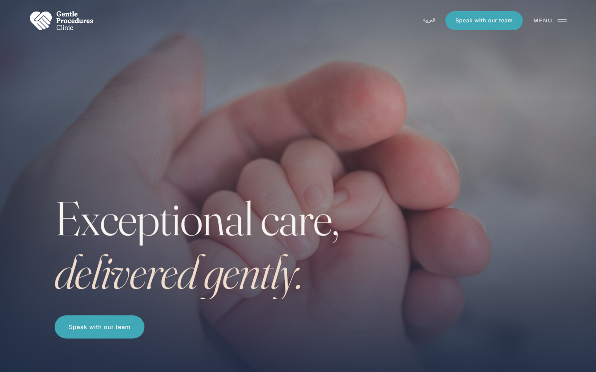
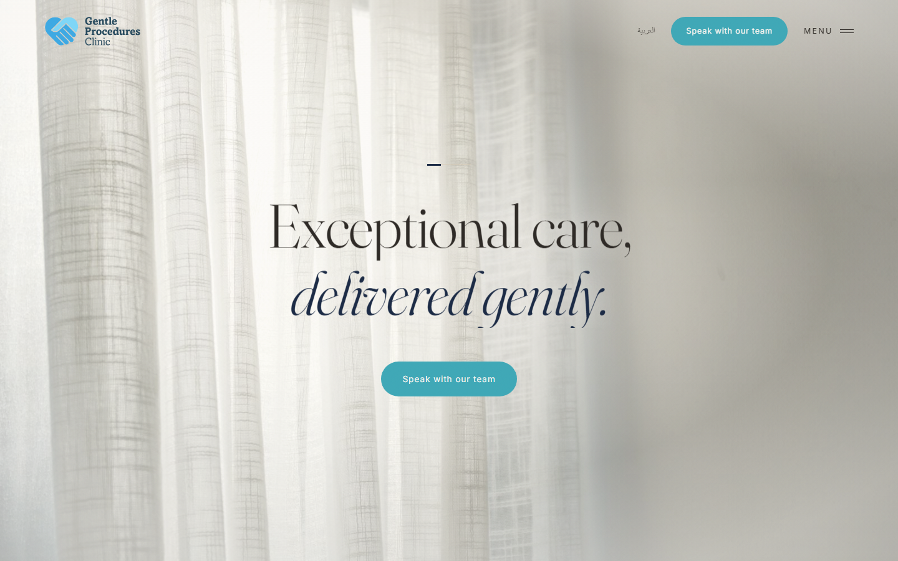

Two front doors, one house
Per the signed brief, the two concepts are identical below the hero and differ only in the hero treatment. Walk the shared scroll once, then choose a hero direction, or a blend within the rules.

Full-bleed cinematic. The site opens like walking into a warm room: the film fills the frame, the words sit quiet over it. Maximal cinema, minimal interface. (Ref: The Perfect Secret.)
Fraunces · Inter
Open concept →

Type-led and asymmetric. The line rests in generous negative space on Alabaster; the film is a contained, off-centre frame, an object placed in the room. The restraint does the reassuring. (Ref: Aman, Joali.)
Fraunces · Inter
Open concept →